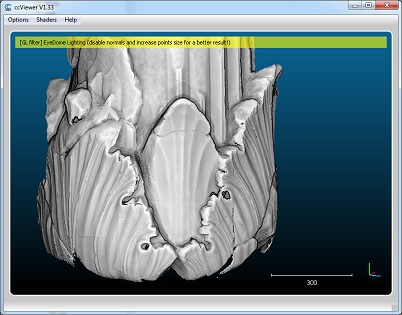

CloudCompare¶
{kind=link}
CloudCompare is a 3D point cloud (and triangular mesh) processing software. It has been originally designed to perform comparison between two 3D points clouds (such as the ones obtained with a laser scanner) or between a point cloud and a triangular mesh. It relies on a specific octree structure that enables great performances1 in this particular function. It was also meant to deal with huge point clouds (typically more than 10 millions points, and up to 120 millions2 with 2 Gb of memory).
install CloudCompare¶
you need to install VTK and PCL for cloudcompare plugins
install mandatory libraries
apt-get install libboost-filesystem-dev
apt-get install libflann-dev
apt-get install libusb-1.0
apt-get install libpcap-dev
apt-get install libqhull-dev
- install VTK
http://www.vtk.org/download/ -> download latest version
http://www.vtk.org/Wiki/VTK/Configure_and_Build
tar -xvf VTK-7.0.0.tar.gz
mkdir VTK-7.0.0-build
cd VTK-7.0.0-build
cmake -DCMAKE_BUILD_TYPE=RELEASE . ../VTK-7.0.0/
make -j8
sudo make install
- install PCL for Qpcl plugins (from source)
http://www.pointclouds.org/documentation/tutorials/compiling_pcl_posix.php -> download latest version
http://www.pointclouds.org/documentation/tutorials/building_pcl.php#building-pcl
(sur s00X , pcl_visualisation plante : le desactiver avec ccmake)
tar xvfj pcl-pcl-1.7.2.tar.gz
cd pcl-pcl-1.7.2 && mkdir build && cd build
cmake -DCMAKE_BUILD_TYPE=Release ..
make -j2
make -j2 install
install shapelib,doxygen
sudo apt-get install shapelib
sudo apt-get install doxygen
install cmake gui
sudo apt-get install cmake-qt-gui
git clone --recursive https://github.com/cloudcompare/trunk.git
cmake-gui
select all plugins -> generate
make
sudo make install
{kind=link}